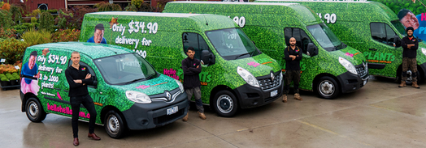
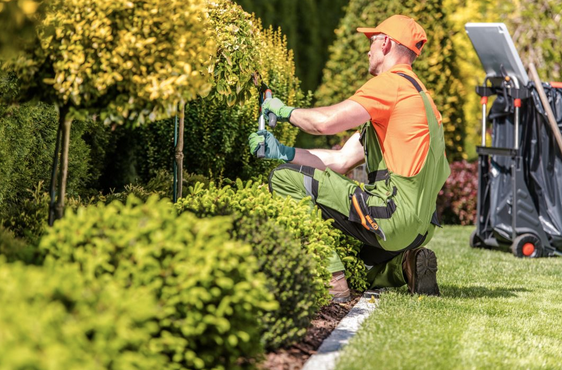

Our Services
Green Circle Plant Nursery can assist with all your plant requirements. We provide free advice on plant selection and plant health. Along with stocking sustainable and indigenous plants, we offer the following services:
Training Program

Through a tree nursery training program, you will gain hands-on experience working with trees, shrubs and root stocks. Dowry nursery hosts are using the latest technologies and innovations in the industry. The hands-on training that is offered on a tree nursery training program includes exposure to all phases of bare root production, from the tissue culture lab or greenhouse all the way to the field. Some tree nursery training programs can include work in propagation and other areas of tree nursery management. Our training including preparing the soil medium, propagating nursery stock, culturing plants in a nursery, processing and shipping nursery stock, insect control, trimming. Please contact us for further information about the training
Garden Design

At Dimension Gardenscape we understand the value of quality workmanship, honest working relationships and our friendly team of landscapers in Canberra have the experience to provide a one stop service for your expert landscape design, construction and garden needs. We pride ourselves on being an award-winning residential landscape design and construction company with over 30 years of experience in the Canberra region.Please contact us for further information about the design service
Delivery Service
Dowry Nursery Delivery Service has been servicing and supporting the Nursery and Landscaping industries Canberra. We specialise in the careful transportation of plants, trees and shrubs between Wholesale and Retail Nurseries and direct to landscapers & local councils on site. We also carry any General freight at a highly competitive rate. For more than 30 years, we have committed to deliver only the best service and the best results. And now as we move into a new age of growth, we have set the bar as high as it will go. We are not just 100% committed to deliver your freight, which is what you should expect of any freight carrier, we are committed to perfection 100%. Anything less than a 100% successful delivery is not acceptable to us and shouldn’t be to you either. There is no compromise with how Plant Delivery Service operate. We will continue to invest in our people, in our infrastructure and in technologies. By doing so, we will deliver value and innovation to our customers and set benchmarks within our industry. Please contact us for further information about the deliverey service
Maintenance
Well-kept gardens provide so much pleasure. They’re beautiful to look at, great places to entertain in and spaces to relax and watch the kids and pets play. Left unchecked, however, gardens can become overgrown and an eyesore. Taking care of gardens takes time and effort. It can be challenging, especially in Canberra’s hot summers and cold winters. For many, landscaping, weeding, mulching and mowing are best left to professional gardeners. The best gardeners take the stress away and leave you to enjoy your garden all year round. In this article, we’ll outline the qualities to consider when choosing a gardening services, and share where to find the best in Canberra. Please contact us for further information about the garden maintenance service